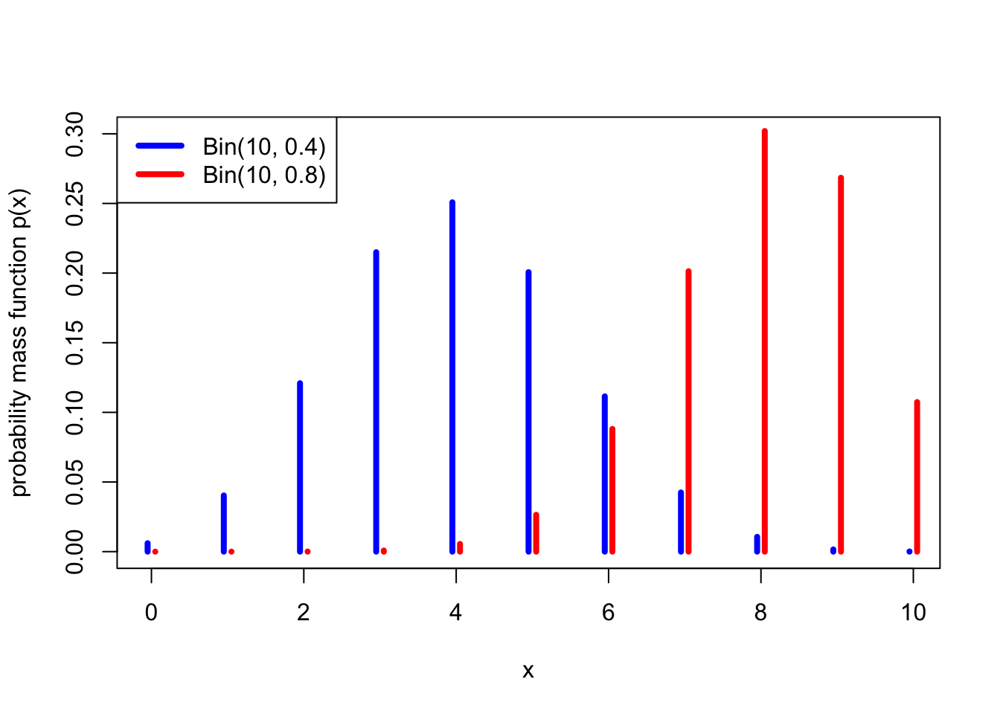
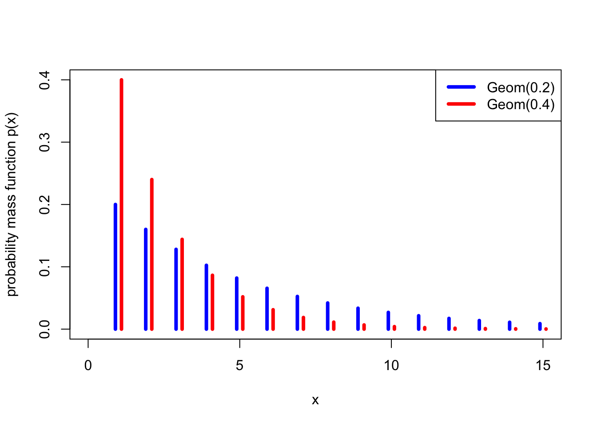

11 Binomial and geometric distributions
Last week, we developed the idea of random variables, and in particular discrete random variables. We saw that the benefit of random variables is that we can just worry about their distribution, which often allows us to move the sample space \(\Omega\) and other more technical matters into the background. (Here, we informally use the word “distribution” to refer to the probability mass function of a random variable – or, later, the continuous equivalent, the probability density function).
There are some distributions – or, rather, some families of distributions – that are so useful that we often want to use them for modelling real-world quantities. This week, we will look at a number of useful discrete distributions.
11.1 Binomial distribution
One family of distributions we have already seen is the Bernoulli trial \(\text{Bern}(p)\), which is 1 with probability \(p\) and 0 with probability \(1-p\). We saw that this could model whether or a biased coin lands Heads, or more generally whether an experiment is successful.
Suppose we toss 10 independent biased coins, each of which lands Heads with probability 0.7 and Tails with probability 0.3. What is the probability we get exactly 8 Heads altogether?
The probability that any specific 8 coins land Heads and the other 2 land Tails is \(0.7^8\times 0.3^2\). However, there are \(\binom{10}{8}\) choices for which 8 coins are the ones that land Heads. Hence, the probability is [ P() = ^8 ^2 = 0.23.]
This is a special case of the binomial distribution.
Let \(X\) be a discrete random variable with range \(\{0,1,2,\dots,n\}\) and PMF [ p(x) = p^x (1-p)^{n-x} . ] Then we say that \(X\) follows the binomial distribution with parameters \(n\) and \(k\), and write \(X \sim \text{Bin}(n,p)\).
So a binomial random variable represents the number of successes in \(n\) Bernoulli trials. In our previous example, the number of Heads from the coin tosses was \(\text{Bin}(10, 0.7)\).
Let \(X \sim \mathrm{Bin}(8, 0.2)\). What is (a) \(\mathbb P(X = 3)\)? (b) \(\mathbb P(X \geq 2)\)?
For (a), we have from the definition [ P(X = 3) = 0.2^3 (1 - 0.2)^{8-3} = 5635 = 0.147 .]
For (b), this is an “at least” question, so it’s more convenient to look at the complementary event, \(\mathbb P(X < 2)\). So \[\begin{align*} \mathbb P(X \geq 2) &= 1 - \mathbb P(X < 2) \\ &= 1 - \mathbb P(X = 0) - \mathbb P(X = 1) \\ &= 1 - 0.8^8 - 8\times 0.2 \times 0.8^7 \\ &= 1 - 0.168 - 0.336 \\ & = 0.497 . \end{align*}\]
What about the expectation and variance of a binomial random variable?
Let \(X \sim \text{Bin}(n, p)\). Then
- \(\mathbb EX = np\),
- \(\Var(X) =np(1-p)\).
One can prove this by working out the sums – for example, the expectation is the value of the sum [ EX = _{x=0}^n x p^x (1-p)^{n-x} , ] which is a bit tricky to calculate, but not fundamentally difficult mathematics. However, in next section we will see an easier way, so we’ll reserve the proof until then instead.
For my 10 biased coins that are each Heads with probability \(0.7\), the expectation and variance are \[\begin{align*} \mathbb EX &= 10 \times 0.7 = 7 \\ \Var(X) &= 10 \times 0.7 \times 0.3 = 2.1 \end{align*}\]
11.2 Geometric distribution
I decide to roll a fair dice until I first roll a six, and then stop. What’s the probability I get the first six on my 5th roll of the dice?
For the first six to be on the 5th attempt, the first 4 rolls have to be non-sixes, and then the fifth roll has to be a six. This has probability [ ()^4 = = 0.08.]
This is a special case of the geometric distribution.
Let \(X\) be a discrete random variable with range \(\{1,2,\dots\}\) and PMF [ p(x) = (1-p)^{x-1}p . ] Then we say that \(X\) follows the geometric distribution with parameter \(p\), and write \(X \sim \text{Geom}(p)\).
So a geometric random variable represents the number of Bernoulli\((p)\) trials until the first success. In our previous example, the number of dice rolls until a six was \(\text{Geom}(\frac16)\).

Let \(X \sim \mathrm{Geom}(0.4)\). What is (a) \(\mathbb P(X = 3)\)? (b) \(\mathbb P(X \geq 3)\).
For part (a), we have [ P(X = 3) = (1 - 0.4)^2 = 0.144 . ]
For part (b), we have [ P(X ) = 1 - P(X =1) - P(X = 2) = 1 - 0.4 - (1-0.4) = 1- 0.64 = 0.36 . ]
Let \(X \sim \text{Geom}(p)\). Then
- \(\mathbb EX = \displaystyle\frac1p\),
- \(\Var(X) = \displaystyle\frac{1-p}{p^2}\).
So the expected number of rolls until rolling a six is [ EX = = 6 , ] with variance [ (X) = = 30 . ]
Proof. (Non-examinable) For the expectation, we want to calculate [ EX = {x=1}^x (1-p)^{x-1} p = p {x=0}^x (1-p)^{x-1}. ] (We can include the \(x = 0\) term in the sum since it is equal to 0.)
At this point we will invoke the identity [ {x = 0}^x a^{x-1} = , ] which can be proved by differentiating the standard sum of a geometric progression [ {x = 0}ax = ] with respect to \(a\).
Using that identity with \(a = 1-p\), we get [ EX = p _{x=0}^x (1-p)^{x-1} = p, = , ] as required.
For the variance, we will use a trick that sometimes comes in useful, which is to start by calculating \(\mathbb EX(X-1)\). Here we get [ EX(X-1) = {x=1}^x (x-1) (1-p)^{x-1} p = p(1-p) {x=0}^x(x-1) (1-p)^{x-2} . ] To calculate the sum, we note that differentiating the geometric progression formula twice gives [ {x = 0}^x(x-1) a^{x-2} = , ] so we get [ EX(X-1) = p(1-p) {x=0}^x(x-1) (1-p)^{x-2} = p(1 -p) , = . ]
We now want to use the computational formula \(\Var(X) = \mathbb EX^2 - \mu^2\) to get the variance. We know \(\mu = 1/p\), and from the calculation above, we have [ EX(X-1) = EX^2 - EX = EX^2 - = . ] So \[\begin{align*} \Var(X) = \mathbb EX^2 - \mu^2 &= \left(\frac{2(1-p)}{p^2} + \frac{1}{p}\right) - \left(\frac{1}{p}\right)^2 \\ &= \frac{2(1-p) + p - 1}{p^2} \\ &= \frac{1-p}{p^2} . \end{align*}\]
Note: Here, we defined a geometric random variable as being the number of trials up to and including the first success, which is a number in \(\{1, 2, \dots\}\). However, some authors define it as the number of failures before the first success, which is a number in \(\{0, 1, 2,\dots\}\). If \(X\) is our definition and \(Y\) is the second “number of failures” definition, then \(X\) and \(Y+1\) have the same distribution. Annoyingly, R uses the “number of failures before success” definition, as we will discuss in a later R worksheet.
11.3 Distributions as models for data
Families of distributions – like the Bernoulli, binomial and geometric distributions we have seen so far in this module – are very useful for models in statistics. This idea is developed Bayesian statistics we will discuss in Lectures 19 and 20 of this module, and is an idea that is extremely important throughout the whole MATH1712 Probability and Statistics II.
The families of distributions we have looked at here are sometimes called “parametric families”, in that each of the distributions depended on one or more parameters: \(p\) for the Bernoulli and geometric distributions; and both \(n\) and \(p\) for the binomial distribution. (In the next lecture we will see another discrete distribution, the Poisson distribution, and later in the module we will also see some continuous parametric families: the exponential, normal and beta distributions.) This means we can adopt a model that data comes from one of the distributions within a family, then use data to estimate the value of that parameter.
For example:
- When testing the bias of a coin, you might assume, counting Heads as 1 and Tails as 0, that the outcome of each test is Bernoulli distributed with parameter \(p\), but where the value of the Heads probability \(p\) is unknown. You could then toss the coin many times and use this data to estimate \(p\).
- The number of years between severe summer floods in a tropical climate could be modelled as geometrically distributed where the flood risk parameter \(p\) is unknown. By look at the gaps between severe floods in historical data, a statistician could try to estimate \(p\).
- A tutor might assume that the number of students that turn up to each tutorial is binomially distributed where \(n\) is known to be 12, the number of students assigned to the group, but \(p\), the “turning-up probability” is unknown. The tutor could then take records of how many students turned up to all the tutorials, and use this to estimate \(p\).
There are two main methods statisticians use to estimate parameters:
- Bayesian statistics: Here, one starts with a subjective “prior” distribution for the parameters, which represents one’s personal belief about which possible values for that parameter are more or less likely before conducting any experiment. After the experiment, one then uses Bayes’ theorem to update that belief to a “posterior” distribution of one’s beliefs about the parameter given the data. The Bayesian approach will be introduced in Lecture 19 of this module.
- Frequentist statistics: Frequentist statistics does not involve any subjective prior views. Rather, frequentism is about assessing the extent to which the data is consistent with certain hypotheses. For example, one might try to find the value for the parameter that would seem “most consistent” with the data, and use that as an “estimate” of the parameter: “My best guess of the Heads probability \(p\) of the coin is \(p = 0.53\).” Alternatively, one might find a range of values for the parameter that are all at least somewhat consistent with the data: “I am confident the value of the Heads probability lies in the range \(0.49 \leq p \leq 0.57\), as these values are all consistent with the data.” Third, one could text if a specific hypothesis is consistent with the data or not: “The data is consistent with the hypothesis that \(p = 0.50\), whih would mean the coin is fair, so I have no strong evidence for disbelieving that.” The frequentist approach will pursued in detail in MATH1712.
Summary
| Distribution | Range | PMF | Expectation | Variance |
|---|---|---|---|---|
| Bernoulli: \(\text{Bern}(p)\) | \(\{0,1\}\) | \(p(0) = 1- p\), \(p(1) = p\) | \(p\) | \(p(1-p)\) |
| Binomial: \(\text{Bin}(n,p)\) | \(\{0,1,\dots,n\}\) | \(\displaystyle\binom{n}{x} p^x (1-p)^{n-x}\) | \(np\) | \(np(1-p)\) |
| Geometric: \(\text{Geom}(p)\) | \(\{1,2,\dots\}\) | \((1-p)^{x-1}p\) | \(\displaystyle\frac{1}{p}\) | \(\displaystyle\frac{1-p}{p^2}\) |